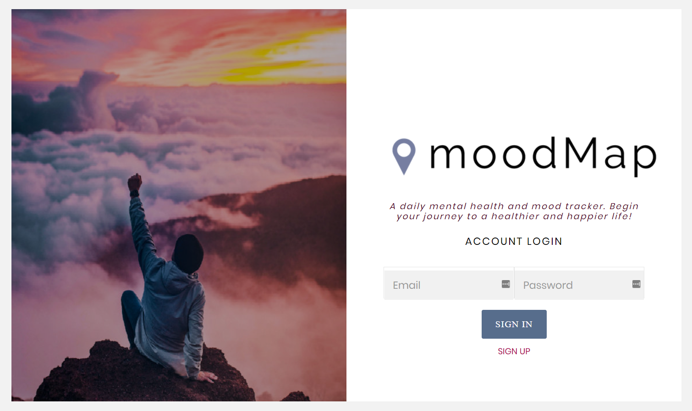
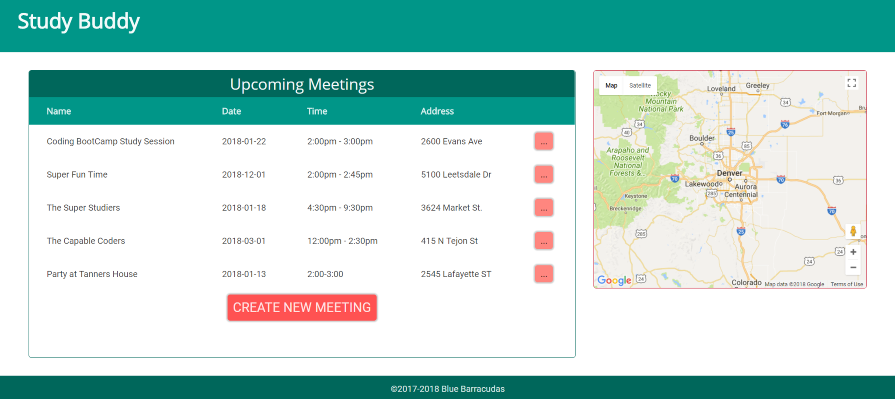
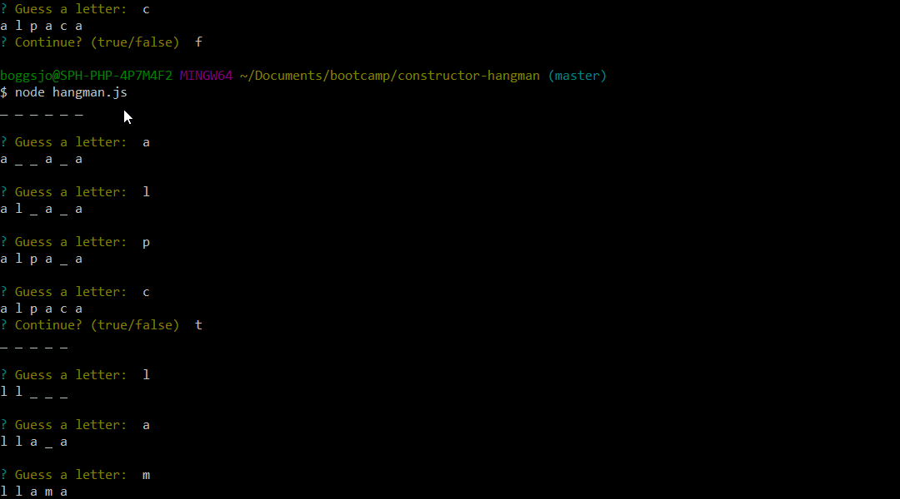

Portfolio
News Scraper
News Scraper scrapes Waypoint for Videogame articles: specifically their headlines, links, and descriptions. Built using Vue.JS, Bootstrap 4, MongoDB, Mongoose, Express, and Node.
MoodMap
MoodMap is a mood and habit tracking app. Users will take a quick survey every day and their answers will be analyzed and presented as charts to help them track their responses over time. MoodMap uses Bootstrap on the front end and Node, Express, MySQL, Sequelize, and Passport.js with bCrypt on the back end.
Burgers, Yum!

Burgers, Yum! is a full-stack app that uses RESTful API calls to a MySQL database to:
- Store delicious burgers and whether they've been devoured yet
- Mark said delicious burgers as devoured
- Add new delicious burgers for us to devour
- Additionally, if you can't think of a clever name for your burger, a blank submission will randomly generate one for you using the random-word NPM package
Technologies used: Material Components for Web, Flexbox, and Handlebars on the front end; Node, Express, MySQL, RESTful APIs, and Gulp on the Back end.
Mushroom Match

Mushroom Match has a simple responsive interface using Materialize for a familiar user experience. Simply begin the brief survey, answer all ten questions, and find out which Mario character could be your soul mate!
To bring you Mushroom Match, I've used the following:
Front end: Materialize, jQuery
Back end: Node, Express
Github Link
bamazon

bamazon is a Command Line Interface app using Node and MySQL. bamazon offers three interface options for three use cases: customers, managers, and supervisors.
StudyBuddy

StudyBuddy is a web app that facilitates study group meetups by
providing a time table and weather information to determine whether
it's safe to drive.
What technologies are you using? HTML5, CSS3, CSS Grid, jQuery, RESTful APIs (Firebase, Google Maps API, Weather Underground API).
Backend: Using RESTful APIs (Firebase, Google Maps, Weather Underground) to create a listing of open study groups and display their locations and weather conditions.
Frontend: Used CSS3, CSS Grid, HTML5, Javascript, and jQuery to create a clean, responsive front end that presents information clearly.
Github Link
Hangman
Quick and simple CLI Hangman game using Node.
LIRI Bot

LIRI (Language Interpretation and Recognition Interface, a play on SIRI) is a command line node.js app that uses the Twitter, Spotify, and OMDb APIs to send data back to the user.
Train Tracker
Train Tracker is a web application that uses a Firebase database and moment.js to track trains' arrival times.
Github Link